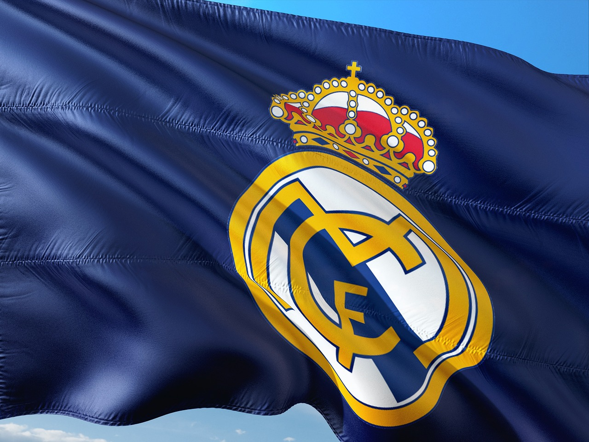
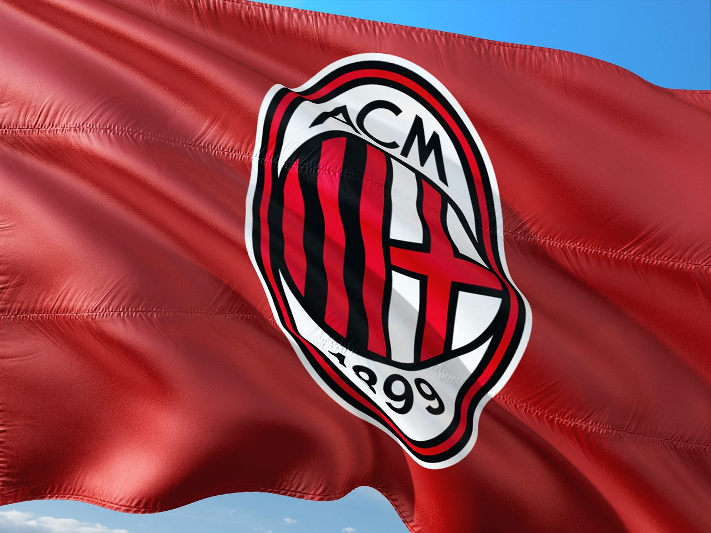
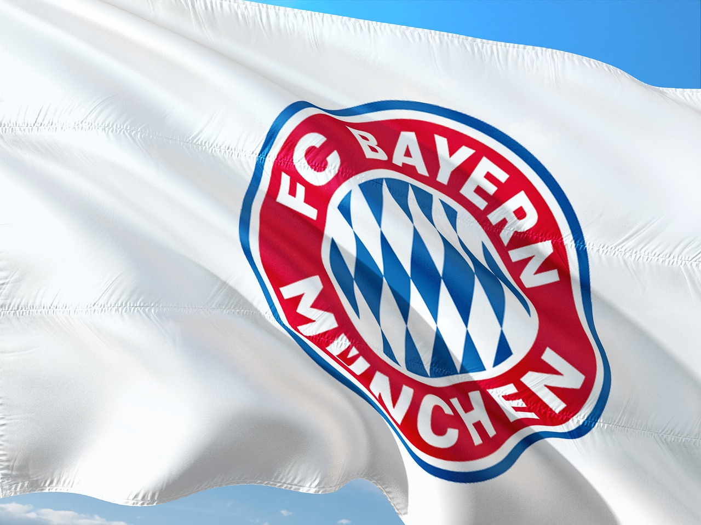

Los 3 mejores equipos de la historia del futbol
1-El Real Madrid

El Real Madrid es un equipo español de la ciudad de Madrid y es el mejor equipo de las historia del futbol ya que cuentan con 14 champions,35 titulos de la liga española,20 copas de españa y 5 mundiales de clubes. Por el madrid han pasado algunos de los mejore jugadores de la historia como Cristiano Ronaldo, Zinedine Zidane, Sergio Ramos o Iker Casillas.
2-El AC Milan

El AC Milan es un equipo italiano de la ciudad de Milan y es el segundo mejor equipo de la historia del futbol ya que han ganado 7 champions,16 titulos de la liga italiana, 5 copas italianas y 1 mundial de clubes. Por el milan han pasado grandes jugadores como Ricardo KaKá, Gennaro Gattuso, Paolo Maldini o Franco Baresi.
3-El Bayern de Munich
.

El Bayern de Múnich es un equipo aleman de la ciudad de Múnich y es el tercer mejor equipo de la historia del futbol ya que cuentan con 6 champions,33 titulos de la liga alemana, 18 copas alemanas y 2 mundiales de clubes. En el Bayern han jugado grandes jugadores como Robert Lewandowski, Thomas Muller, Franz Beckenbauer o Manuel Neuer.
Para volver a la primera pagina aquí.